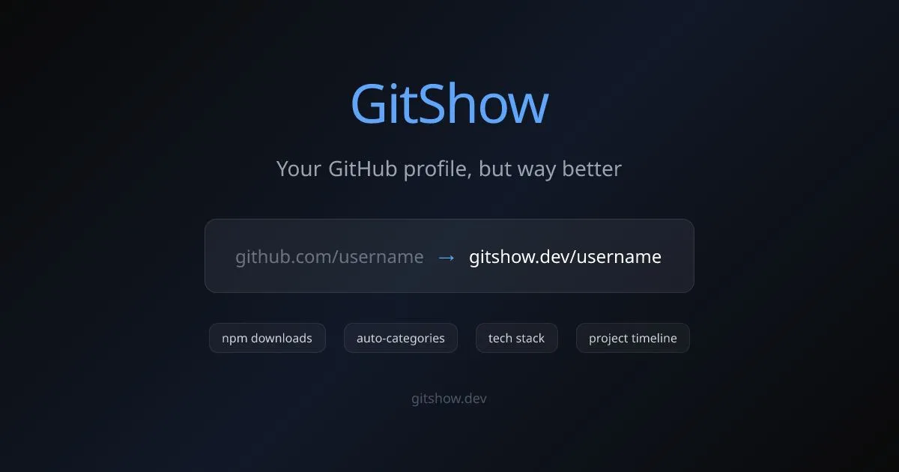

GitShow adds project context to GitHub profiles
Originally posted on LinkedIn, February 25, 2026.
I built GitShow, an open source tool that gives GitHub profiles a visual upgrade. Replace github.com with gitshow.dev in any profile URL:
github.com/ofershap → 1
GitShow adds information that GitHub does not display:
- npm download stats across all your packages
- Projects automatically grouped into categories such as MCP Servers, CLI Tools, React & UI, and DevOps
- Tech stack visualization, focus areas, and a project creation timeline
- One-click share buttons
GitHub shows a flat list of repositories. GitShow tells the story of what you actually build.
The same URL pattern works for both individuals and organizations: gitshow.dev/YOUR_GITHUB_USERNAME.
- Sindre Sorhus: 90 projects and 43B npm downloads/month
- Vercel: organization profiles work too
- Linus Torvalds: 6 repos and 225k stars
- Wes Bos: 478k npm downloads/month
GitShow is fully open source.
